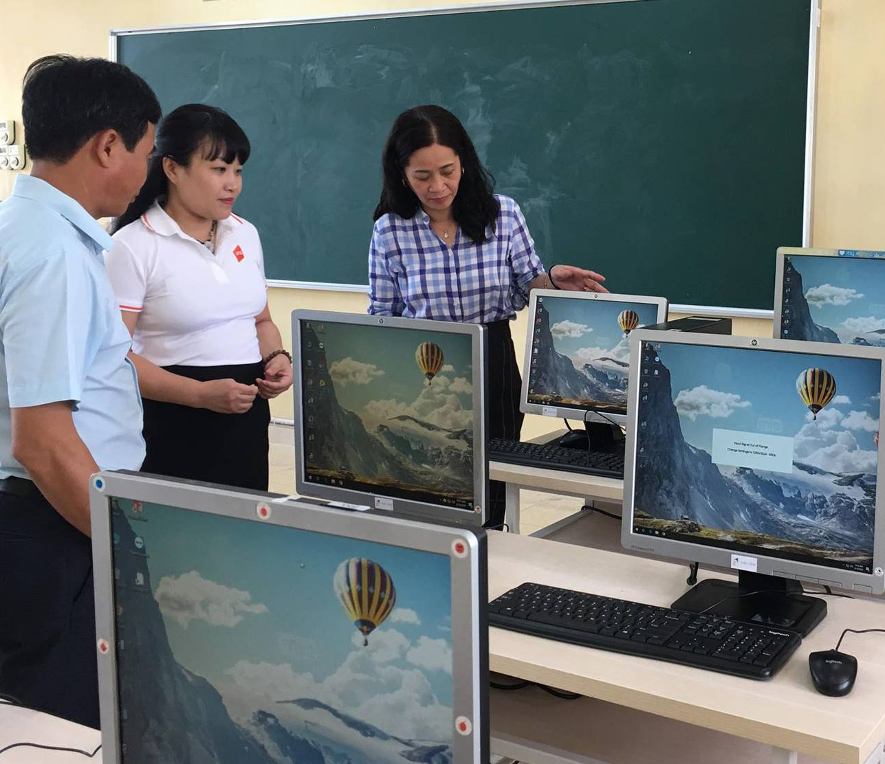
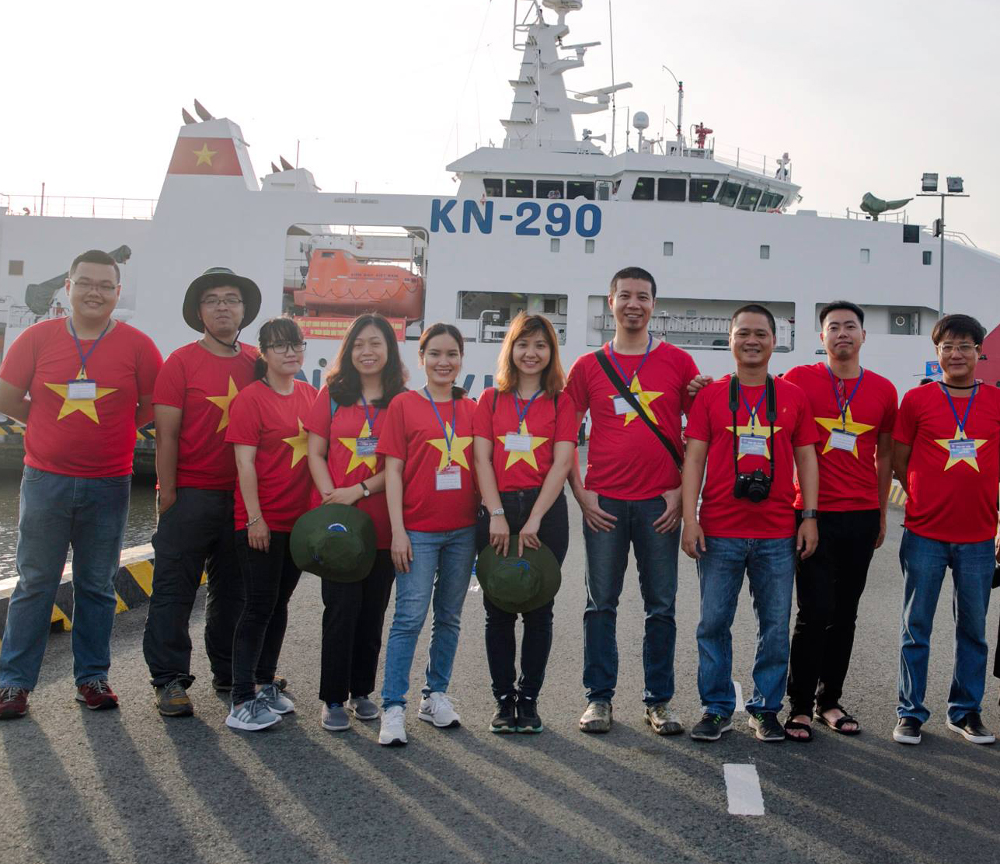

Từ Thiện
Đi vào hoạt động từ năm 2010, tính đến nay,
Quỹ cộng đồng người sử dụng Internet Việt Nam (VNIF) đã thực hiện 23 dự án thiện nguyện trên 13 tỉnh,
thành, địa phương trên cả nước, hỗ trợ hơn 10.000 hoàn cảnh khó khăn.
Quỹ VNIF là tổ chức phi lợi nhuận, hoạt động trên cơ sở tự nguyện nhằm phục vụ, hỗ trợ các dự án Giáo Dục,
Y Tế và nơi Nối Kết Thiện Nguyện. Quỹ cũng là một cổng thông tin quan trọng kết nối các tổ chức từ thiện, bảo trợ,
trung tâm xã hội và các tổ chức, cá nhân có nguyện vọng làm từ thiện với những hoàn cảnh cần sự trợ giúp.
Song song đó, Quỹ VNIF còn đồng hành cùng nhiều Quỹ từ thiện lớn như Newborn Việt Nam,
Operation Smile trong nhiều chiến dịch ý nghĩa, với tổng giá trị tới hơn 30 tỷ đồng.



 Trang chủ >Chúng tôi >Tin tức
Trang chủ >Chúng tôi >Tin tức